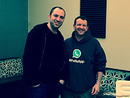

Jan Koum (Ukrainian: Ян Кум; born February 24, 1976) is a Ukrainian-American
internet inventor and computer programmer. He is the CEO and co-founder of
WhatsApp (with Brian Acton), a mobile messaging application which was acquired
by Facebook Inc. in February 2014 for US$19 billion.
In 2014, he entered the Forbes list of the 400 richest Americans at position 62,
with an estimated worth of more than seven and half billion dollars. He was the
highest-ranked newcomer to the list that year.
Koum was born in Kyiv, Ukraine. He is Jewish. He grew up in Fastiv, outside
Kyiv, and moved with his mother and grandmother to Mountain View, California in
1992,where a social support program helped the family to get a small two-bedroom
apartment, at the age of 16. His father had intended to join the family later,
but finally remained in Ukraine.At first Koum's mother worked as a babysitter,
while he himself worked as a cleaner at a grocery. By the age of 18 he became
interested in programming. He enrolled at San Jose State University and
simultaneously worked at Ernst & Young as a security tester.
In February 1996, a restraining order was granted against Koum in state court in
San Jose, California. An ex-girlfriend detailed incidents in which she said Koum
verbally and physically threatened her. In October 2014, Koum said about the
restraining order, "I am ashamed of the way I acted, and ashamed that my
behavior forced her to take legal action".
In 1997, Jan Koum was hired by Yahoo as an infrastructure engineer, shortly
after he met Brian Acton while working at Ernst & Young as a security
tester.Over the next nine years, they worked at Yahoo. In September 2007 Koum
and Acton left Yahoo and took a year off, traveling around South America and
playing ultimate frisbee.
Both applied, and failed, to work at Facebook. In
January 2009, he bought an iPhone and realized that the then-seven-month-old App
Store was about to spawn a whole new industry of apps.
He visited his friend
Alex Fishman and the two talked for hours about Koum's idea for an app over tea
at Fishman's kitchen counter. Koum almost immediately chose the name WhatsApp
because it sounded like "what's up", and a week later on his birthday, February
24, 2009, he incorporated WhatsApp Inc. in California.
WhatsApp became popular in just a small amount of time, and this caught
Facebook's attention.
Facebook's founder Mark Zuckerberg first contacted Koum in
the spring 2012. The two began meeting at a coffee shop in Los Altos,
California, then began a series of dinners and walks in the hills above Silicon
Valley.
On February 9, 2014 Zuckerberg asked Koum to have dinner at his home, and
formally proposed Koum a deal to join the Facebook board - 10 days later
Facebook announced it was acquiring WhatsApp for US$19 Billion USD.
Over the first half of 2016, Koum sold more than $2.4 billion worth of Facebook
stock, which was about a half of his total holdings. He is estimated to still
own another $2.4 billion in Facebook stock.
His mother died in 2000 of cancer in the United States, while his father died in
Ukraine in 1997.